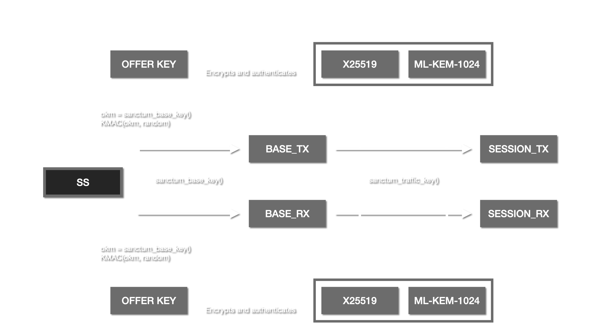
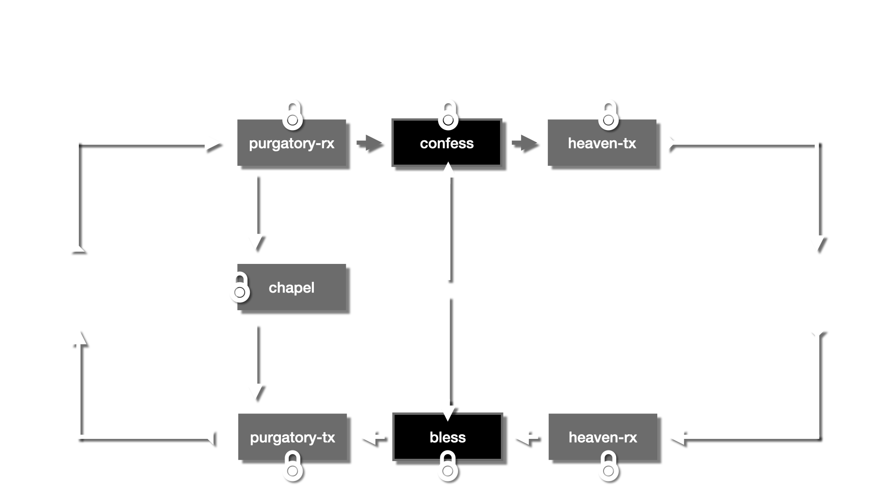
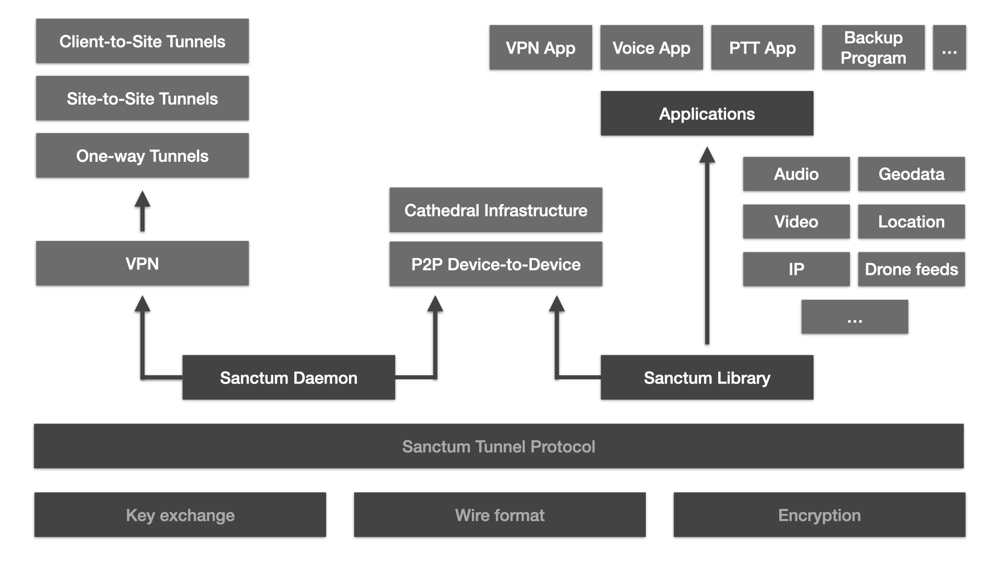

Sanctum is a small, reviewable, PQ-secure and fully privilege separated VPN daemon and protocol designed to run under OpenBSD, Linux and macOS. It is designed from the ground up with security in mind, and will always be open and free, released under the ISC license.
Zero vulnerabilities in 4 years.
$ hymn list status tunnel name peer online hymn-91-02 nightfall 96.8.72.127:2335 pending a5af7dd7a29ede00-01-02 spiritus 191.72.252.199:4469 online 32ba9a8207d08b00-02-03 sancnet 21.210.82.11:48214 liturgy eee75b0b067ff500-01-00 finknet 37.77.239.3:4469 down └ eee75b0b067ff500-01-02 gotyon - down └ eee75b0b067ff500-01-03 melyon - online └ eee75b0b067ff500-01-07 mini 180.14.226.253:4469 down └ eee75b0b067ff500-01-0a archlinux - down └ eee75b0b067ff500-01-0b rpi5 - down └ eee75b0b067ff500-01-0c - - online └ eee75b0b067ff500-01-0d elefant 115.25.187.249:47182 $
Why Sanctum?
Sanctum is designed from the ground up with security mind, it runs on different operating systems such as OpenBSD, Linux and MacOS.
Resilient
Your devices connected, no matter where they are. Always P2P and E2EE. Built to be resilient and work in any scenario, sanctum supports different topologies, including one-way tunnels.
PQ-secure
Sanctum is post-quantum secure, its unique key exchange is based on a shared symmetrical secret in combination with a hybridized asymmetrical exchange (classical ECDH + ML-KEM-1024).
Privilege separated
Sanctum is the only free and open VPN software in the world designed from the ground up in a fully privilege separated way. Its multi-process is unique and allows for fine-grained sandboxing.
Topologies
Sanctum, out of the box, supports different modes that can be used to build all sorts of topologies.
Tunnel mode
Classic site-to-site, or roadwarrior setup.
Pilgrim-shrine mode
One-way tunnels, in case of diodes.
Liturgy mode
Auto discovery of peers and tunnel management.
Cathedral mode
Relay, discovery and key distribution.
Cryptography and privilege separation
Sanctum has been designed from the ground up with strong cryptography and sandboxing in mind.
Hybrid, PQ-secure key exchange
Sanctum is post-quantum secure due to its unique approach to deriving session keys based on a shared symmetrical secret in combination with a hybridized asymmetrical exchange. The asymmetrical exchange combines both classic ECDH (x25519) and the PQ-secure NIST standardized ML-KEM-1024. All three secrets are used to derive strong session keys.

Multi-process privilege separation
Sanctum is built using a multi-process approach where each process is only doing one thing. This allows for more fine-grained sandboxing in relation to permissions or allowed system calls. Packets flow between these processes in a well-defined manner making it impossible to move a packet straight from the red side to the black side without passing the encryption process and vice-versa.

An alternative to Tailscale or ZeroTier
Sanctum is often used to create more secure replacements for things like Tailscale or ZeroTier, and by organizations whose communication must remain secret, even in the future. Using Sanctum its cathedral mode can replace ZeroTier entirely with a more resilient and cryptographic sane setup.
Set up your own cathedral → or join The Reliquary, a community-driven Sanctum cathedral network.
The ecosystem
Sanctum is the name for the VPN daemon and protocol but part of its ecosystem is the library implementation, allowing one to embed sanctum tunnels straight into applications.
Embed sanctum into your apps
The library implementation of sanctum is called libkyrka. Using this library you can easily embed your own sanctum tunnels direct into your own applications. The library supports cathedrals and runs on all types of different hardware platforms and can for example be used to serve video feeds from drones to an operator or to create integrated voice comms in a resilient way.

Talks
Found a security issue?
Send an email to priests@sanctorum.se and we will work with you.